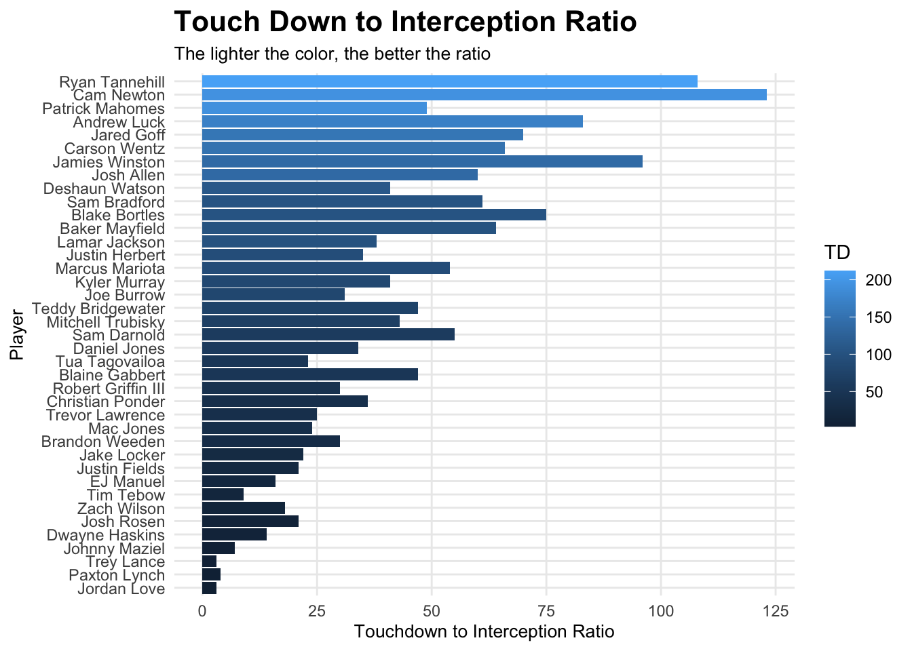
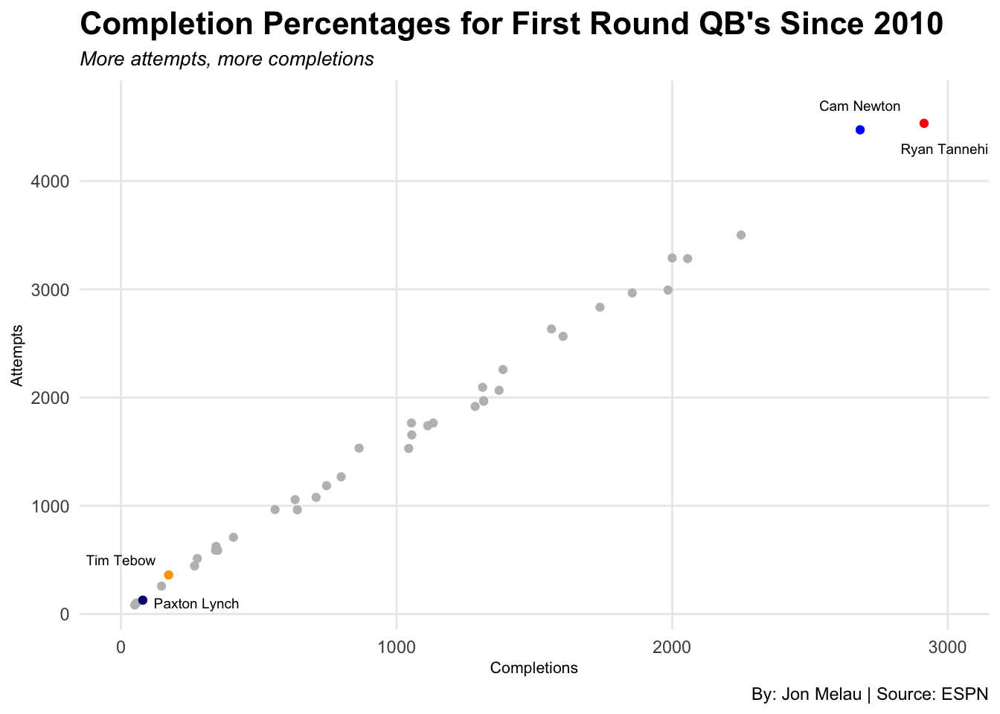

Registered S3 methods overwritten by 'ggalt':
method from
grid.draw.absoluteGrob ggplot2
grobHeight.absoluteGrob ggplot2
grobWidth.absoluteGrob ggplot2
grobX.absoluteGrob ggplot2
grobY.absoluteGrob ggplot2
Code
library(labeling)library(ggrepel)
The quarterback position is widely renowned as the hardest position in all of sports. You need a mixture of arm strength, accuracy, mobility, confidence, awareness, and so many other traits to be sustainable at the highest level of the sport. Year after year college prospects declare for the NFL draft, submitting their name into a pool of players to hopefully be selected to an NFL team. Each year, this pool of players typically contains a few high profile quarterbacks that are slated to be taken with high overall, or first-round picks.
For instance, in this years 2023 NFL Draft, Alabama QB, Bryce Young was taken with the #1 overall pick that was held by the Carolina Panthers. Ohio State QB, CJ Stroud, would then be selected #2 overall by the Houston Texans, as well as Anthony Richardson at #4 by the Indianapolis Colts. The Panthers, Texans, and Colts really have no idea how successful these young quarterbacks will be, but they are willing to roll the dice and give up assets at a chance to find the next Patrick Mahomes.
In this study, I will be looking at every quarterback taken within the first round of the draft since 2010. I will then be looking out how their playing careers have taken course over the last 13 years, and finally I will be ranking every quarterback in order of best to worst.
I have excluded first round quarterbacks from this year’s (2023) NFL draft because they have not played yet, as well as Kenny Pickett from the 2022 NFL draft, mainly due to the fact that it is too early to tell their success level when having played barely any games.
I will be evaluating the regular season passing data from each quarterback that meets the eligibility requirements for this study. The first and most basic thing I wanted to look at was touchdown to interception ratio. This gives us a fair assessment of accuracy and decision making while on the field. Keep in mind that some quarterbacks have played more games than others because of their age. I decided to keep some of the data that may appear as skewed, like games played, but on the other hand I included them to show that some quarterbacks were so bad that they didn’t even play a full season.
Code
qbdata <-read_csv("data/qbsdata.csv")
Rows: 39 Columns: 13
── Column specification ────────────────────────────────────────────────────────
Delimiter: ","
chr (1): Name
dbl (12): Draft Year, Draft Pick, Games Played, Attempts, Completions, Compl...
ℹ Use `spec()` to retrieve the full column specification for this data.
ℹ Specify the column types or set `show_col_types = FALSE` to quiet this message.
Code
ggplot(qbdata, aes(x=reorder(Name, TD), weight=INT, fill=TD)) +geom_bar() +coord_flip() +labs(y ="Touchdown to Interception Ratio",x ="Player",title ="Touch Down to Interception Ratio",subtitle ="The lighter the color, the better the ratio",source ="ESPN" ) +scale_y_continuous(labels = scales::comma) +theme_minimal() +theme(plot.title =element_text(size =16, face ="bold"),plot.subtitle =element_text(size =10),axis.title =element_text(size =10),panel.grid.minor =element_blank() )

To better understand the chart above, the length of the bar is each quarterbacks total touchdowns in their career. The color of each bar shows their career interceptions on a color range of blue (good), to black (bad). It is clear that Ryan Tannehill has a large number of touchdowns as well as a low number of interceptions in ratio. But at the same time, Ryan Tannehill has the most games played on this list so that must be taken into consideration.
This data may look skewed but obviosuly the longer the quarterback has been in the league, the more touchdowns they are going to throw. At the same time, the data is not skewed because there are quarterbacks like Johnny Manziel, EJ Manuel, Brandon Weeden, Jake Locker, and Christian Ponder that were still taken with high overall picks in the first with expectations to be long-time starters.
This data shows that even with the highest expectations that not every quarterback will succeed. On the other hand you have more recently drafted quarterbacks Like Trey Lance who was drafted #3 overall with the expectations to sit behind Jimmy Garoppolo for a year and take over the reigns as the starter the following season.
Now lets take a look at completion percentage. Completion percentage shows good decision making, awareness, and accuracy from the quarterback position. To examine, here is a scatter plot chart that shows each quarterbacks career attempted passes to completions.
Code
qbrank <-read_csv("qbsrank.csv")
Rows: 39 Columns: 4
── Column specification ────────────────────────────────────────────────────────
Delimiter: ","
chr (2): Name, Team
dbl (2): Rank, Rating
ℹ Use `spec()` to retrieve the full column specification for this data.
ℹ Specify the column types or set `show_col_types = FALSE` to quiet this message.
ggplot() +geom_point(data = qbdata, aes(x = Completions, y = Attempts ), color ='grey') +geom_point(data = Paxton_Lynch, aes(x = Completions, y = Attempts), color ='navy') +geom_point(data = Tim_Tebow, aes(x = Completions, y = Attempts), color ='orange') +geom_point(data = Cam_Newton, aes(x = Completions, y = Attempts), color ='blue') +geom_point(data = Ryan_Tannehill, aes(x = Completions, y = Attempts), color ='red') +geom_text(aes(x=275, y=100, label="Paxton Lynch"),size=2.5, color="black") +geom_text(aes(x=0, y=500, label="Tim Tebow"),size=2.5, color="black") +geom_text(aes(x=2682, y=4700, label="Cam Newton"),size=2.5, color="black") +geom_text(aes(x=3000, y=4300, label="Ryan Tannehill"),size=2.5, color="black") +labs(title ="Completion Percentages for First Round QB's Since 2010",subtitle ="But Stonehouse has the bigger leg",x ="Yards per Punt", y ="% of Punts Inside of the 20",caption ="By: Jon Melau | Source: Pro Football Reference") +scale_x_continuous(limits =c(0, 3000)) +theme_minimal() +theme(plot.title =element_text(size =16, face ="bold"),axis.title =element_text(size =8),plot.subtitle =element_text(size =10),panel.grid.minor =element_blank() )
Code
ggsave("image.jpg")
Saving 7 x 5 in image
It is obvious that Ryan Tannehill and Cam Newton have more completions and attempts because they have been in the league a lot longer than most quarterbacks on this list. Something to point out though is that Paxton Lynch was drafted in the first round of the 2016 NFL Draft, and Tim Tebow was selected in the first round of the 2010 NFL Draft. Tebow would go on to only be active for 35 games over the course of his 3 year playing career.
For how electrifying of a player Tebow was at the University of Florida, it is fair to say that he was a bust. Tebow has not been an active quarterback since 2013 as his job was taken from him by arguably a top 4 quarterback of all time, Peyton Manning.
Paxton Lynch on the other hand would go on to become the first player in history to be benched in the NFL, XFL, USFL and CFL. Lynch was taken witht the 26th pick in 2016, so it’s fair to call him a bust, but the Broncos were definitely reaching with this pick, while simultaneously not losing too many assets at the 26th pick.
After combining basic stat reading, it was time to create the rankings list of all of the quarterbacks accounted for in this study. Some things that I took into account in this list that arent’t represented in my data were rushing statistics, playoff success, times sacked, and accolades. Here is my personal rankings:
Code
ggplot() +geom_bar(data=qbrank, aes(x=reorder(Name, Rank), weight=Rating), fill="green") +coord_flip() +labs(title ="From Worst to First",subtitle ="Ranking every first-round quarterback since 2010 from bust to super star",x ="",y ="Efficiency Rating",caption ="ESPN | By: Jon Melau" ) +theme_minimal() +theme(plot.title =element_text(size =14, face ="bold"),axis.title =element_text(size =10), plot.subtitle =element_text(size=11), panel.grid.minor =element_blank(),axis.text.x =element_text(size =10),plot.title.position ="plot" )

There is certainly one player that through all categories runs away with the #1 ranking on this list, and that is Patrick Mahomes from the Kansas City Chiefs. Two Super Bowl victories, two Super Bowl MVP’s, two regular season MVP’s, offensive player of the year and two passing yards/touchdown titles alone are enough to solidify Mahomes as the best first round quarterback since 2010.
I would like to also include some love for Cam Newton. Newton was one of the most dominant players in the NFL for a 5 years span where there were some insanely good defenses in the NFC. He lead his team to a 15-1 record in 2015, but ended up losing in the Super Bowl. He holds the record for most rushing yards by a quarterback in NFL history and had a hell of an arm. People like to hate on him now, but forget how incredible he was in the early 2010’s. Oh yah, and he is only one of three players on this list with an MVP.
It was tough chosing a last place in this list, but I think it is pretty clear that the Arizona Cardinals really fumbled the bag when drafting Josh Rosen at #10 in 2018, especially considering Lamar Jackson went #32 to the Baltimore Ravens later that night. To be fair, it wasn’t the Cardinals fault, Rosen seemed like the real deal coming out of UCLA. 7 teams in 5 years, and out of the league before hes 27 is a tough look for a top ten pick.
It may seem that I am being harsh on Zach Wilson as well but he may have had one ov the worst starting quarterback seasons the NFL has ever seen. He has the lowest completion percentage on this list and that’s saying a lot considering he has only started not even a full season worth of games. But the Jets definitely got fleeced taking him with the #2 overall pick.
There are a few more contorversial rankings but for the most part I beleive it to be a fair list.